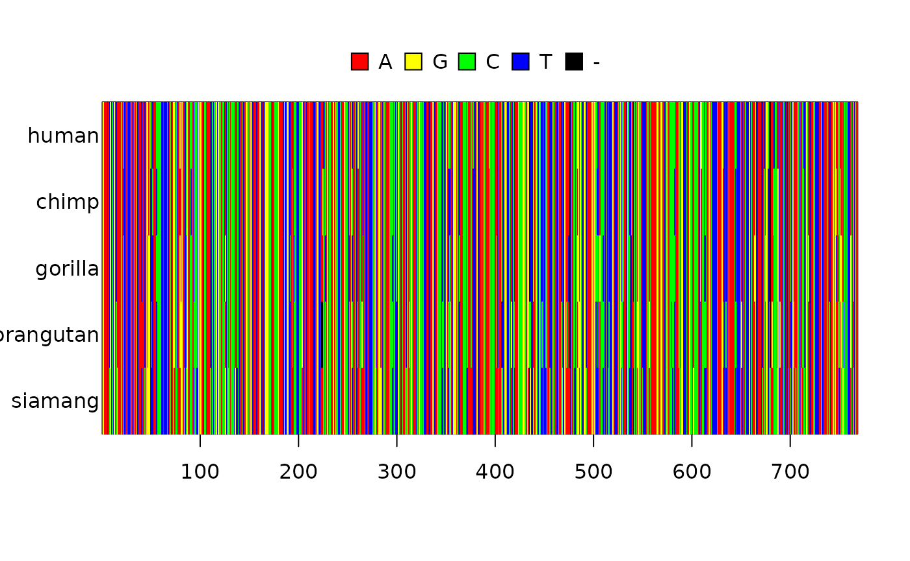

Introduction

Given a DNA alignment, one wonders which phylogenetic inference model fits that alignment best. mcbette (‘Model Comparison using babette’) can give the answer.
In this example, we use a ‘BEAST2’ example alignment and compare the fit of two inference models on that alignment. We’ll interpret the finding in the end, concluding which inference model to use.
Getting started
First, load mcbette:
To use mcbette, BEAST2 and the BEAST2 NS package must be installed:
if (rappdirs::app_dir()$os == "win") {
message("'mcbette' can only run on Linux and MacOS")
} else if (!beastier::is_beast2_installed()) {
message(
"BEAST2 must be installed. ",
"Tip: use 'beastier::install_beast2()'"
)
} else if (!mauricer::is_beast2_ns_pkg_installed()) {
message(
"The BEAST2 'NS' package must be installed. ",
"Tip: use 'mauricer::install_beast2_pkg(\"NS\")'"
)
}
#> BEAST2 must be installed. Tip: use 'beastier::install_beast2()'If you’ve just gotten a message that you need to install either BEAST2 or the BEAST2 NS package, do so. The rest of this vignette will be empty.
Method
To run mcbette, we need a FASTA file with a DNA alignment in it. We use one that is present in the mcbette package:
fasta_filename <- system.file("extdata", "primates.fas", package = "mcbette")Now we have the alignment saved in our FASTA file, we can display it:
alignment <- ape::read.FASTA(fasta_filename)
image(alignment)
mcbette allows one to select the evolutionary model that has the heighest evidence (aka marginal likelihood) for having generated that alignment. For more information how to set up an inference model, see the ‘Inference models’ vignette of the beautier package:
vignette("beautier", "inference_models")In this example, we compare two evolutionary models on the alignment shown above. Because the best evolutionary model will likely be used in Bayesian inference, in this example we will use ‘evolutionary model’ and ‘inference model’ interchangably.
One of the inference models is the default babette inference model.
inference_model_1 <- beautier::create_ns_inference_model()
inference_model_1$site_model$name
#> [1] "JC69"only differing in their nucleotide substitution model:
- JC69: all nucleotides share the same mutation rate. For example, the mutation rate from adenine to cytosine is the same as the mutation rate from guanine to thymine
- GTR: there is a different mutation rate from each nucleotide to each other nucleotide
if (can_run_mcbette()) {
# Create the two inference models
inference_model_1 <- beautier::create_ns_inference_model(
site_model = beautier::create_jc69_site_model()
)
inference_model_2 <- beautier::create_ns_inference_model(
site_model = beautier::create_gtr_site_model()
)
# Shorten the run, by doing a short (dirty, unreliable) MCMC
inference_model_1$mcmc <- beautier::create_test_ns_mcmc()
inference_model_2$mcmc <- beautier::create_test_ns_mcmc()
# Combine the two inference models
inference_models <- c(list(inference_model_1), list(inference_model_2))
# Compare the the two inference models
marg_liks <- est_marg_liks(
fasta_filename = fasta_filename,
inference_models = inference_models
)
knitr::kable(marg_liks)
}The results are interpreted by interpret_marg_lik_estimates as follows:
if (can_run_mcbette()) {
interpret_marg_lik_estimates(marg_liks)
}Clean up:
beastier::remove_beaustier_folders()